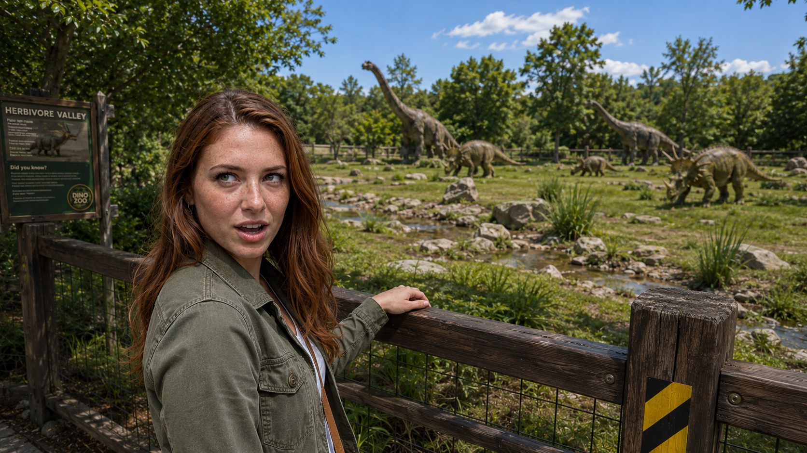
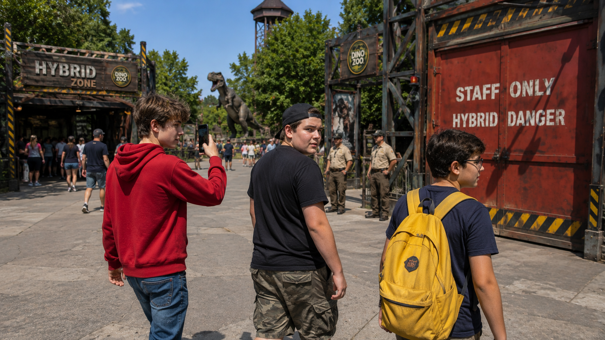
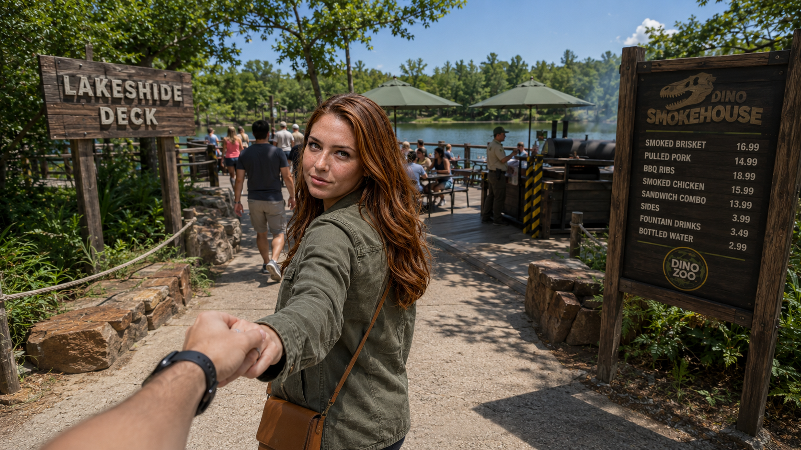

Still (i2v input) left · Grok clip right · updated 2026-07-09 (Zone 9 Hybrid — 9/10 clips APPROVED + committed; 70/82 clips). S73 re-roll deferred (Grok weekly cap hit, resets July 13); Zone 10 blocked by same cap. Green = approved clip · Yellow = QA-passed / review · Blue = still only · Grey = todo.
roll 3 — roll 1 KILLED (bg sauropod neck-stump + white mouth-jet), roll 2 KILLED (chew-strand flicker at jaw); mouth-closed-and-empty rider fixed it: heads intact + mouths clean all 12 frames at 6-10x zoom (f11-12 'strands' = GF's backlit flyaway hairs)

S585:13-5:18 · 5sTEENS glimpseCLIP APPROVED
teen-constancy rider held: same 3 teens + backpack all frames; stencil stable; cap flash ~3.5s adjudicated sun glare

7 Lunch
S595:18-5:23 · 5sWalk to foodCLIP APPROVED
roll 1 — whisper word-for-word + GF ad-lib "Come on!" at the tail (she's beckoning; 6s clip trims to 5s anyway); signage stable; frame QA clean. Pre-existing: menu-board price column misaligned in the source still.

S59b5:23-5:28 · 5sMarket row — hot dog + smokehouse (NEW)CLIP APPROVED
roll 2 — roll 1 KILLED: Grok invented a gibberish hanging sign ("DINO / IDPLAE / EWMD") inside the smokehouse @4-6s; fixed with a no-new-signage rider (that spot now renders as a lamp). All menu boards verified letter-for-letter.
roll 3 — rolls 1+2 KILLED for family-duplication (r1: boy cup→tray swap + mother clone; r2: family exited the door TWICE + a double-exposure frame w/ ghost legs); fixed with an exit-exactly-once rider. Golden arches verified intact every frame, all rolls (trademark: keep the beat short per Edit col).
roll 1 on the NATIVE 10s PILL (10.04s — editor trims to 8s; never Extended). All 3 turns word-for-word (whisper base+small); scripted pause before "...eat your ribs, Luke." lands at 0.9s. Table objects all hold 20/20 frames; "rib regrows" inspector flag ADJUDICATED FALSE at native fps (rotation/foreshortening). Notes: Luke re-grips cup ~4-6s; GF is already eating during her first line.
8 T-Rex
S615:41-5:46 · 5sZone gateCLIP APPROVED
roll 1 — whisper word-for-word ("The one everyone's waiting for. T-Rex."). Signage-stability rider HELD: carved T-REX arch + both T-REX ZONE / WARNING placards letter-stable every frame; guests persist; frame QA clean.
S625:46-5:52 · 6sBABY — host holds the hatchlingCLIP APPROVED
roll 1 — 3 turns word-for-word (Wanna hold him? / is that safe? / For you or the baby?). Head/mouth-integrity rider HELD: hatchling skull intact every frame, mouth opens only to squeak, nothing ejected; 3 humans constant.
S635:52-5:57 · 5sFossil jawCLIP APPROVED
roll 1 — whisper word-for-word ("A single tooth — 30 centimeters, root included."). No placard in scene to morph; fossil teeth + spotlit pedestal tooth stable; kids stay behind the glass wall.
S645:57-6:02 · 5sDome walkway — heard before seenCLIP APPROVED
roll 1 — whisper word-for-word. Barrier rider HELD: mesh dome/glass/railings clean, guests persist, GF hand 5 fingers. Accepted note: a tiny distant bg wall roundel reads garbled — background decorative, not the load-bearing T-REX gate/placard text.
S656:02-6:08 · 6sIt steps into viewCLIP APPROVED
roll 1 — "Whoa" reaction (both speakers). Glass-physics rider HELD: T-Rex snout stays behind the window mullion, never breaches to the guests' side; no body warping.
S666:14-6:19 · 5sHead at the glass, kids (NEW angle)CLIP APPROVED
roll 1 — whisper word-for-word. Glass rider HELD (snout flat on glass, stays on its side) + count-constancy rider HELD: 6 children every frame, clothing colours stable, no pop-in/duplicate/teleport.
S676:25-6:35 · 10sTHE ROAR (10s)CLIP APPROVED
THE ROAR — roll 2 on the NATIVE 10s pill (10.04s; never Extended). roll 1 REJECTED by owner: at peak roar the head filled the pane and read as punching THROUGH the glass toward the crowd. Fixed with a "roar from a step BACK, keep an air gap, never fill or cross the pane/mullion" rider. Roll 2: at max extension (f_12/t6.0s) the snout only reaches the mullion edge and never crosses; glass reflection/haze stays in front of the head every frame; head-integrity + no-ejection hold; whisper word-for-word.
roll 1 — whisper word-for-word (What do you mean 'not the scary one'— / …the hybrid zone.). Clasped hands stable, GF face-locked, T-REX + HYBRID ZONE signs resolve cleanly. Accepted note: left WARNING placard small-print stays soft (within signage-softness tolerance).
9 Hybrid
S696:52-6:58 · 6sTEENS SNEAK INCLIP APPROVED
roll 1 · whisper word-for-word · 3 teens through the STAFF-ONLY door, door physics + stencil stable. Busy-scene note: yellow-backpack teen makes a fast camera-arc jump ~t4.0-4.5s; count holds at 3.
roll 1 · whisper word-for-word · exactly 2 pale bone-white Indominus juveniles + ranger, glass barrier intact. Note: 1-frame snout wobble on the left juvenile ~t2.0s (i2v transient, accepted).
S717:04-7:10 · 6sIndominus feeding at the moatCLIP APPROVED
roll 1 · whisper word-for-word (ear-check 'Indominus'→'endominus') · pale Indominus vertical-lunges for the crane meat, stays own-side of the moat. Drool/water off a wet limb = adjudicated false-positive (own side).
S727:10-7:15 · 5sClaw-scarred wall (NEW angle)CLIP APPROVED
roll 1 · whisper word-for-word · wall solid, claw scars stable, pale Indominus stays behind the barrier. Clean.
S737:15-7:21 · 6sCamouflage reveal (NEW angle)RE-ROLL DEFERRED
roll 1 · whisper word-for-word. ⚠️ Camo renders as neon-green + the creature walks across (not a subtle in-place blend); physics clean. Owner chose RE-ROLL, but the Grok WEEKLY CAP hit mid-attempt → re-roll DEFERRED to the cap reset (July 13). Strengthened rider (stay-planted + subtle mottled blend, no neon) is already baked into the TSV, ready to resume. roll-1 clip kept local at clips/S73.mp4 (not committed).
S747:21-7:29 · 8sThe overlook (8s)CLIP APPROVED
native 10s pill (editor trims to 8s) · whisper word-for-word · pit stays EMPTY (D-Rex reveal held for S75), signage stable, only beacon + wind-sway. Clean.
S757:35-7:44 · 9sD-REX REVEAL (9s)CLIP APPROVED
native 10s pill (editor trims to 9s) · whisper word-for-word · D-REX distinct (charcoal, orange seams, six-clawed — never the pale Indominus), one creature, head integrity through the swing-up. Clean.
S767:44-7:51 · 7sTEENS IN DANGER (7s — distance + reaction framing, no contact)CLIP APPROVED
6s base (editor pads to 7s) · whisper: interrupted line 'HEY - get away from the-' intact (Grok ad-libs a completion word). D-Rex advances toward the teens but stays fully contained behind the pit + balustrade (no breach) — heightens the danger beat; 3 teens + backpack constant.
S777:51-7:56 · 5sAt the glass, breathing (NEW angle)CLIP APPROVED
roll 1 · whisper word-for-word · dramatic close-up: the charcoal D-Rex snout stays BEHIND the glass with breath-fog on the pane EVERY frame (no breach), teen reflection present. The Env fog-fix worked.